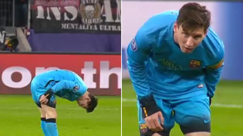
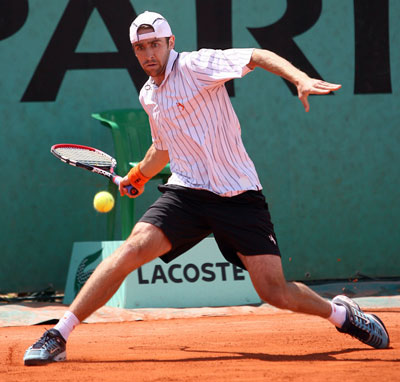
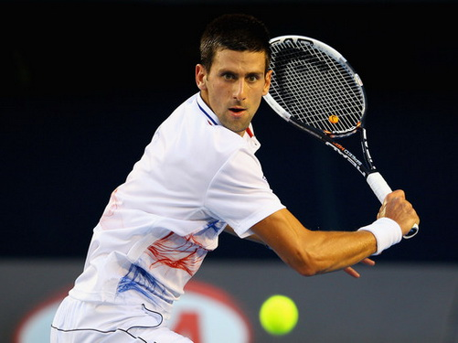

Khi Lionel Messi ôm chân, không chỉ một lần mà vài lần, trong trận làm khách Leverkusen rạng sáng qua, các cule như thấy tim mình thắt lại. Neymar đã chấn thương, bây giờ Messi không thể tái phát chấn thương như thế.
Chỉ vài tuần sau khi “ngừng chiến”, chấn thương có vẻ như đang mở một cuộc tấn công mới nhằm vào Barcelona. Nếu Neymar chấn thương hôm thứ Ba vừa qua và có thể phải đến trận chung kết FIFA Club World Cup (20/12) mới có thể trở lại thì Messi đã kết thúc trận đấu với Leverkusen với vấn đề ở gân kheo. Ở trận đấu trên đất Đức, Messi đã ghi bàn, dấu hiệu cho thấy anh đang dần lấy lại phong độ sau thời gian ngồi ngoài vì chấn thương. Thế nhưng việc để Messi thi đấu trọn vẹn 90 phút trong một trận đấu thủ tục vô tình khiến các cule không khỏi lo lắng về nguy cơ tái phát chấn thương.
Dù tờ Mundo Deportivo khẳng định Messi không chấn thương, việc coi thường tín hiệu báo động này có thể dẫn đến những hậu quả không tốt. Một ngày trước trận đấu tại Cúp Nhà Vua với Villanovense, Messi đã không thể tập cùng đồng đội vì đau nhẹ. CLB không ra thông báo chính thức gì về việc này. Việc Messi xuất hiện trong trận đấu với Valencia tuần trước coi như đã xua tan những hoài nghi ấy. Thế nhưng việc Messi lại bị đau trong trận đấu với Leverkusen lại mang đám mây đen trở lại. Người ta buộc phải hỏi: dùng Messi liên tục trong 2 trận đấu ngay khi anh chưa thật sự đạt 100% thể lực có phải là quyết định chính xác của Enrique?
Ronaldo tặng bàn thắng cho cầu thủ khiến Real bị loại khỏi Cup Nhà vua |
||
|  | Sau khi ghi bàn thứ hai trong trận gặp Malmo, CR7 liền tặng cho người đồng đội "đen đủi" Denis Cheryshev. |
|
Ronaldo tặng bàn thắng cho cầu thủ khiến Real bị loại khỏi Cup Nhà vua |
||
|  | Sau khi ghi bàn thứ hai trong trận gặp Malmo, CR7 liền tặng cho người đồng đội "đen đủi" Denis Cheryshev. |
|